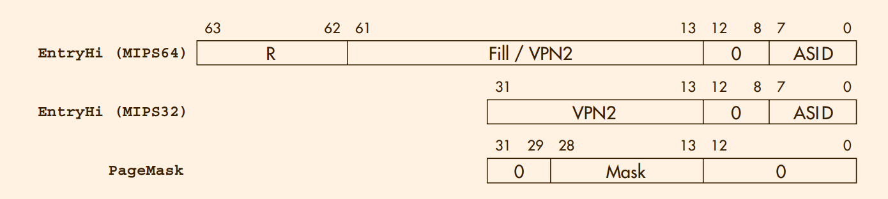
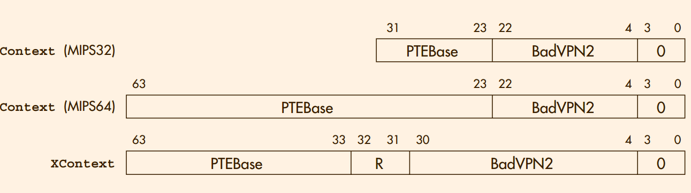

<!doctype html>
<html>
	<head>
		<meta charset="utf-8">
		<meta name="viewport" content="width=device-width, initial-scale=1.0, maximum-scale=1.0, user-scalable=no">

		<title>MEM</title>

		<link rel="stylesheet" href="css/reveal.css">
		<link rel="stylesheet" href="css/theme/league.css">

		<!-- Theme used for syntax highlighting of code -->
		<link rel="stylesheet" href="lib/css/zenburn.css">

		<!-- Printing and PDF exports -->
		<script>
			var link = document.createElement( 'link' );
			link.rel = 'stylesheet';
			link.type = 'text/css';
			link.href = window.location.search.match( /print-pdf/gi ) ? 'css/print/pdf.css' : 'css/print/paper.css';
			document.getElementsByTagName( 'head' )[0].appendChild( link );
		</script>

	</head>

	<body>

		<div class="reveal">
			<div class="slides">

          <section data-markdown> 
            <script type="text/template">
                # Memory Management
                - What does memory mamagement do ?
                - Why we need *mapping* ?
                - The framework of memory mapping
                - Hardware's perspective
                  - Register
                  - Instructions
            </script>
          </section>


          <section>
            <section data-markdown> 
              <script type="text/template">
                  # What does memory mamagement do ?
              </script>
            </section>


            <section data-markdown> 
              <script type="text/template">
                  ### What does memory mamagement do ?

                  The essence of the Linux memory manager’s job is to provide each program with its own memory space
<!--             从linux 和　MIPS 的角度分析       -->
              </script>
            </section>

          </section>


          <section>
            <section data-markdown> 
              <script type="text/template">
                  # Why we need *mapping* ? 
              </script>
            </section>

            <section data-markdown> 
              <script type="text/template">
                  ### Why we need *mapping* ? 
                  1. Hiding and protection
                  3. Demand paging
                  2. Allocating contiguous memory to programs
                  4. Relocation
              </script>
            </section>

            <section data-markdown> 
              <script type="text/template">
                  ### Why we need *mapping* ? 
                  why paged mapping is preferred ?
                   <!-- .element: class="fragment" data-fragment-index="1" -->
              </script>
            </section>

          </section>


          <section>
            <section data-markdown> 
              <script type="text/template">
                  # The framework of memory mapping
              </script>
            </section>

            <section data-markdown> 
              <script type="text/template">
                  ### The framework of memory mapping
                  [linux memory management architecture](./img/LKM.pdf)

                  <!-- 不知道如何实现直接添加作为下一个界面 -->
              </script>
            </section>

            <section data-markdown> 
              <script type="text/template">
                  ### The framework of memory mapping
                   <!-- .element: class="fragment" data-fragment-index="1" -->
              </script>
            </section>

            <section data-markdown> 
              <script type="text/template">
                  ### The framework of memory mapping
                   <!-- .element: class="fragment" data-fragment-index="1" -->
              </script>
            </section>

          </section>


          <section>

            <section data-markdown> 
              <script type="text/template">
                  # Hardware's perspective
              </script>
            </section>

            <section data-markdown> 
              <script type="text/template">
                  ### Hardware's perspective
                  What's key issue

                  Refill trap <!-- .element: class="fragment" data-fragment-index="1" -->
              </script>
            </section>

            <section data-markdown> 
              <script type="text/template">
                  ### Hardware's perspective
                  
                  <!-- tlb entry -->

              </script>
            </section>

            <section data-markdown> 
              <script type="text/template">
                  ### Hardware's perspective
                  
                  1. EntryHi(VPN2)  high-order bits of a program address 
                  2. EntryHi(ASID)  address space identifier
                  3. EntryHi(R)     address region selector
                  4. PageMask       set up TLB fields that map larger pages
              </script>
            </section>

            <section data-markdown> 
              <script type="text/template">
                  ### Hardware's perspective
                  
                  1. PFN      high-order bits of the physical address
                  2. C        cache-coherent multiprocessor systems to set the "cache algorithm"
                  3. D        dirty
                  4. V        valid
                  5. G        global 
              </script>
            </section>

            <section data-markdown> 
              <script type="text/template">
                  ### Hardware's perspective
                  
                  1. Context(PTEBase)   page table entry
                  2. Context(BadVPN2)   high-order bits of **BadVAddr**
                  3. XContext(R)        region selector
              </script>
            </section>

            <section data-markdown> 
              <script type="text/template">
                  ### Hardware's perspective
                  1. index
                  2. wired
                  3. random
              </script>
            </section>

            <section data-markdown> 
              <script type="text/template">
                  ### Hardware's perspective
                  ```
                  .set noreorder
                  .set noat
                  TLBmiss32:
                    mfc0 k1,C0_CONTEXT 
                    lw k0,0(k1)
                    lw k1,8(k1)
                    mtc0 k0,C0_ENTRYLO0
                    mtc0 k1,C0_ENTRYLO1
                    ehb   
                    tlbwr 
                    eret  
                    .set at
                    .set reorder
                  ```
              </script>
            </section>


            <section data-markdown> 
              <script type="text/template">
                  ### Hardware's perspective
                  ```
                  tlb_refill:
                    # (1) get base of PGD into k1
                    lui k1, %hi(pgd_current)

                    lw k1, %lo(pgd_current)(k1) # get miss virtual address (VA)
                    mfc0 k0, c0_badvaddr 
                    srl k0, k0, 22
                    sll k0, k0, 2 
                    addu k1, k1, k0 

                    mfc0 k0, c0_context # get VA again, this time from Context register
                    lw k1, 0(k1) 
                    srl k0, k0, 0x1 
                    andi k0, k0, 0xff8 
                    addu k1, k1, k0

                    # load the TLB entries
                    lw k0, 0(k1) 
                    lw k1, 4(k1)

                    srl k0, k0, 0x6
                    mtc0 k0, c0_entrylo0
                    srl k1, k1, 0x6 
                    mtc0 k1, c0_entrylo1

                    ehb 
                    tlbwr 
                    eret
                  ```
              </script>
            </section>
          </section>


            <section data-markdown> 
              <script type="text/template">
                  ### Hardware's perspective
                  ```
                    static void build_r3000_tlb_refill_handler(void){
                      long pgdc = (long)pgd_current;
                      u32 *p;

                      memset(tlb_handler, 0, sizeof(tlb_handler));
                      p = tlb_handler;

                      uasm_i_mfc0(&p, K0, C0_BADVADDR);
                      uasm_i_lui(&p, K1, uasm_rel_hi(pgdc)); /* cp0 delay */
                      uasm_i_lw(&p, K1, uasm_rel_lo(pgdc), K1);
                      uasm_i_srl(&p, K0, K0, 22); /* load delay */
                      uasm_i_sll(&p, K0, K0, 2);
                      uasm_i_addu(&p, K1, K1, K0);
                      uasm_i_mfc0(&p, K0, C0_CONTEXT);
                      uasm_i_lw(&p, K1, 0, K1); /* cp0 delay */
                      uasm_i_andi(&p, K0, K0, 0xffc); /* load delay */
                      uasm_i_addu(&p, K1, K1, K0);
                      uasm_i_lw(&p, K0, 0, K1);
                      uasm_i_nop(&p); /* load delay */
                      uasm_i_mtc0(&p, K0, C0_ENTRYLO0);
                      uasm_i_mfc0(&p, K1, C0_EPC); /* cp0 delay */
                      uasm_i_tlbwr(&p); /* cp0 delay */
                      uasm_i_jr(&p, K1);
                      uasm_i_rfe(&p); /* branch delay */

                      if (p > tlb_handler + 32)
                        panic("TLB refill handler space exceeded");

                      pr_debug("Wrote TLB refill handler (%u instructions).\n",
                         (unsigned int)(p - tlb_handler));

                      memcpy((void *)ebase, tlb_handler, 0x80);
                      local_flush_icache_range(ebase, ebase + 0x80);

                      dump_handler("r3000_tlb_refill", (u32 *)ebase, 32);
                  }
                  ```
              </script>
            </section>
			</div>
		</div>

		<script src="lib/js/head.min.js"></script>
		<script src="js/reveal.js"></script>

<!-- 注释和ppt的注释，难道所有ppt的采用相同的位置存放 -->

		<script>
			// More info about config & dependencies:
			// - https://github.com/hakimel/reveal.js#configuration
			// - https://github.com/hakimel/reveal.js#dependencies
			Reveal.initialize({
        slideNumber: true,
				dependencies: [
					{ src: 'plugin/markdown/marked.js' },
					{ src: 'plugin/markdown/markdown.js' },
					{ src: 'plugin/notes/notes.js', async: true },
					{ src: 'plugin/highlight/highlight.js', async: true, callback: function() { hljs.initHighlightingOnLoad(); } }
				]

			});
		</script>
	</body>


</html>
